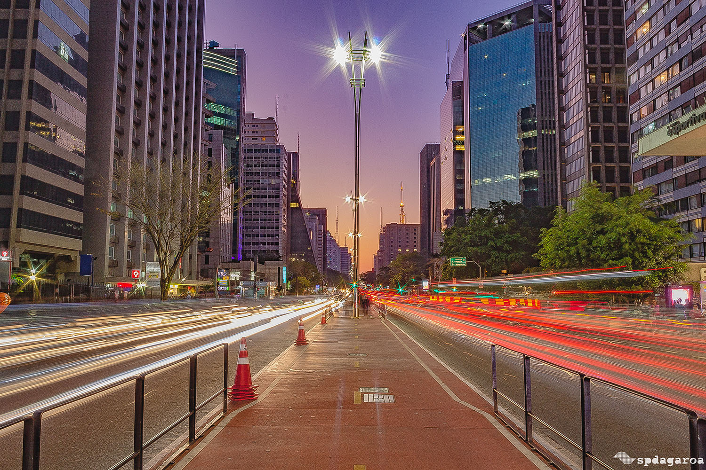
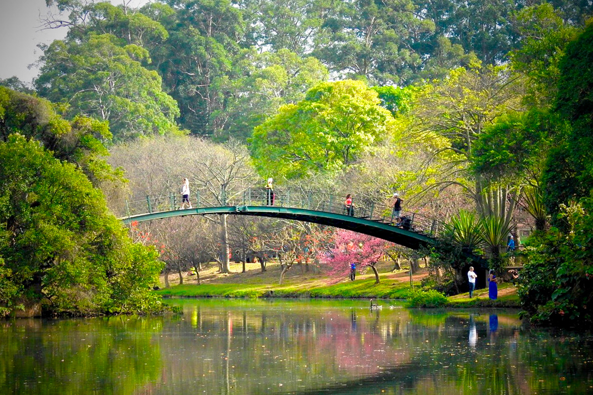
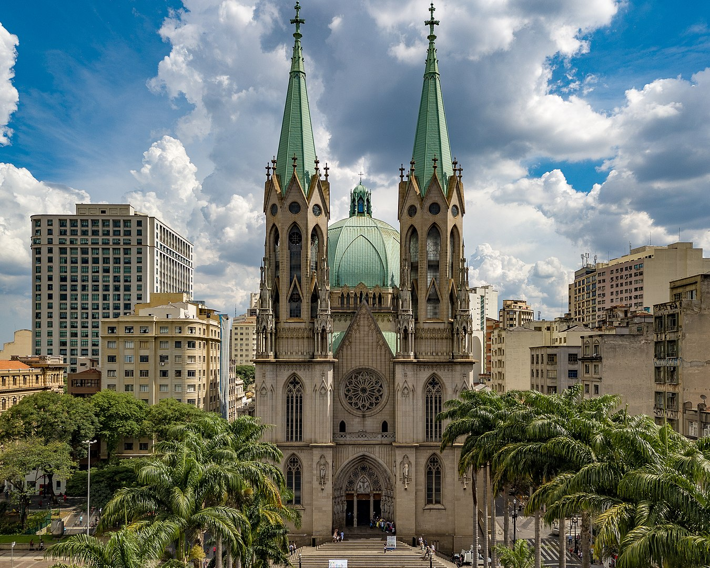
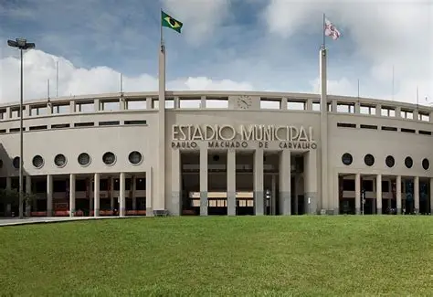

Mercado Municipal de São Paulo (Mercadão) – Famoso por sua arquitetura e pela gastronomia, com destaque para o sanduíche de mortadela e o pastel de bacalhau.
📍 Endereço: Rua da Cantareira, 306 – Centro Histórico de São Paulo – SP.

São Paulo é uma metrópole dinâmica e multifacetada, considerada o principal polo econômico da América Latina. A cidade se destaca pela mistura de modernidade e tradição, abrigando arranha-céus imponentes, áreas verdes, centros culturais de renome e uma vida urbana intensa. Reconhecida pela diversidade cultural, São Paulo recebe visitantes do mundo inteiro em busca de oportunidades, lazer e experiências únicas.
Avenida Paulista – Um dos cartões-postais mais famosos da cidade, reúne centros culturais, museus, shoppings e uma vida noturna agitada.
📍 Endereço: Avenida Paulista, Bela Vista, São Paulo – SP.
Parque Ibirapuera – Considerado um dos maiores parques urbanos da América Latina, é ideal para lazer, prática de esportes e visitas a museus como o MAM e a OCA.
📍 Endereço: Av. Pedro Álvares Cabral, s/n – Vila Mariana, São Paulo – SP.
Catedral da Sé – Localizada no coração da cidade, é uma das maiores igrejas em estilo neogótico do mundo e ponto de encontro de turistas e moradores.
📍 Endereço: Praça da Sé, s/n – Sé, São Paulo – SP.
Mercado Municipal de São Paulo (Mercadão) – Famoso por sua arquitetura e pela gastronomia, com destaque para o sanduíche de mortadela e o pastel de bacalhau.
📍 Endereço: Rua da Cantareira, 306 – Centro Histórico de São Paulo – SP.
Museu do Futebol – Localizado no Estádio do Pacaembu, oferece experiências interativas sobre a história e a paixão nacional pelo esporte.
📍 Endereço: Praça Charles Miller, s/n – Pacaembu, São Paulo – SP.
